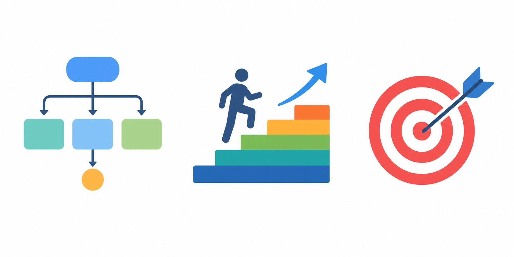
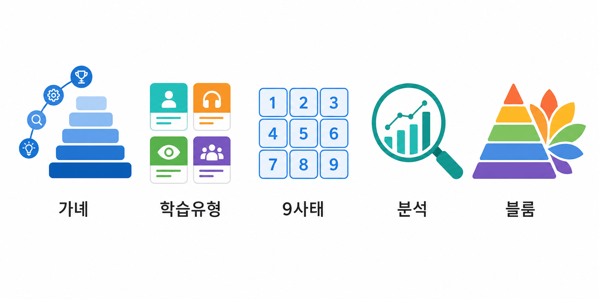
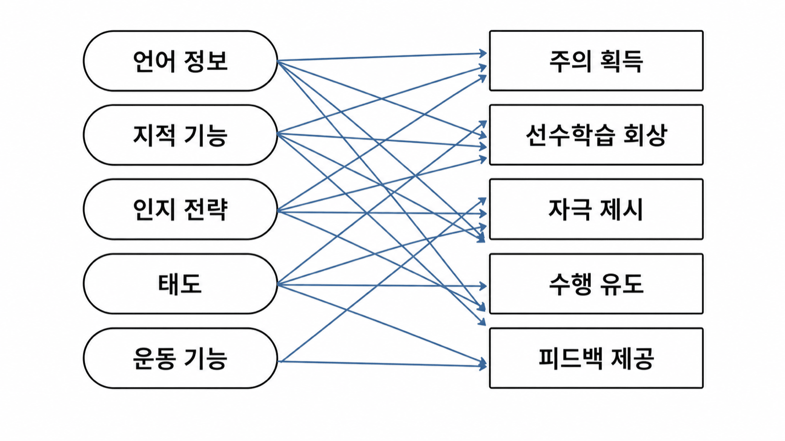
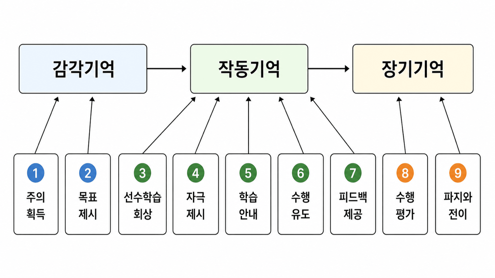
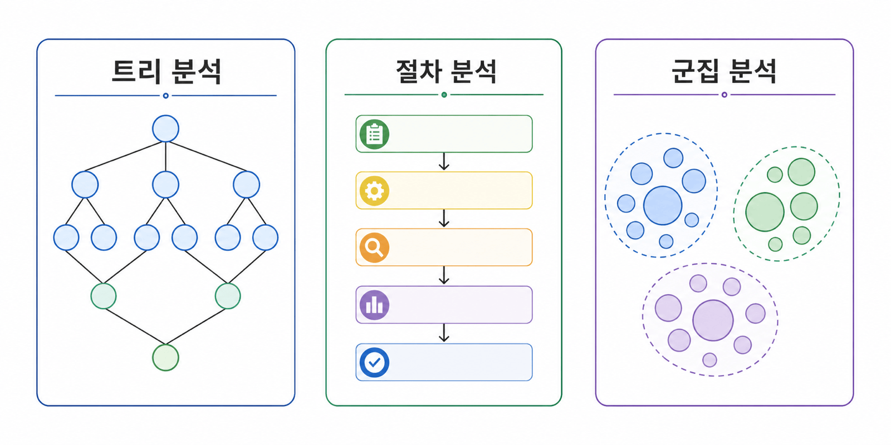
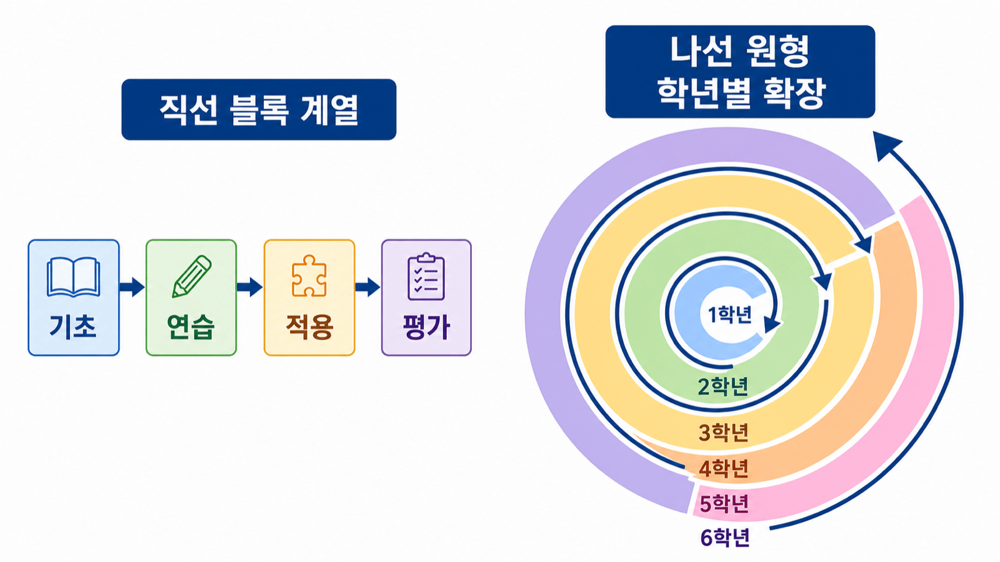
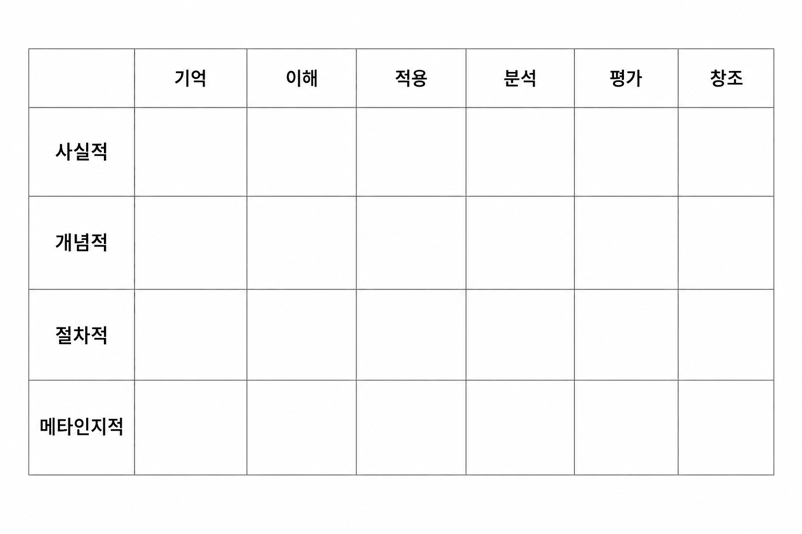

안내 질문: 가녜가 행동주의에서 출발한 점이 왜 인지주의 교수설계의 전환점이 되었는가?
통찰 1: 학습에는 여러 유형이 존재 — 유형마다 질적으로 다른 결과
통찰 2: 각 유형에 맞는 최적의 교수·학습 조건이 달라진다

안내 질문: 교사가 수업 설계 전에 왜 먼저 학습 결과의 유형을 파악해야 하는가?
| 유형 | 능력/수행 형태 | 핵심 교수 조건 |
|---|---|---|
| 언어정보 | 선언적 지식 기억·재현 | 구조화·의미 있는 반복 |
| 지적기능 | 규칙 적용·문제해결 | 선수학습 확인·점진적 적용 |
| 인지전략 | 자기조절·인지 통제 | 전략 시도·성찰 기회 |
| 태도 | 행동 반응 경향·감정적 성향 | 모델링·의미 있는 경험 |
| 운동기능 | 신체적 수행 기능 | 반복 연습·구체적 피드백 |
안내 질문: 9가지 교수사태는 왜 임의적 순서가 아닌 CIP 이론에 근거한 설계인가?
외적 교수 활동 → 내적 인지 처리 활성화

| # | 사태 | 내적 학습 과정 | 수업 예시 |
|---|---|---|---|
| ① | 주의 획득 | 감각기억 활성화 | 충격적 사례, 흥미로운 질문 |
| ② | 학습 목표 제시 | 기대 형성 | "오늘 수업 후 할 수 있는 것" |
| ③ | 선수 학습 회상 | 장기기억 인출 | "지난 시간 배운 내용은?" |
| ④ | 자극 자료 제시 | 선택적 지각 | 강조·구조화된 내용 제시 |
| ⑤ | 학습 안내 제공 | 부호화·정교화 | 비유, 예시, 개념도 |
| # | 사태 | 내적 학습 과정 | 수업 예시 |
|---|---|---|---|
| ⑥ | 수행 유도 | 적용·자기 확인 | 연습 문제, 역할극, 실험 |
| ⑦ | 피드백 제공 | 강화·오개념 수정 | "왜 맞고 틀렸는지" 구체 안내 |
| ⑧ | 수행 평가 | 인출·학습 여부 확인 | 목표 달성 여부 형성평가 |
| ⑨ | 파지·전이 향상 | 장기기억 강화 | 다양한 맥락 사례, 복습 과제 |
안내 질문: 위계적·절차적·군집 분석 중 어떤 기준으로 방법을 선택해야 하는가?
위계적 분석: "무엇을 먼저 알아야 하는가?" → 선수 지식 계층 파악 (지적기능·운동기능)
절차적 분석: "어떤 순서로 해야 하는가?" → 수행 단계별 나열 (스마트폰 조작·실험 절차)
군집 분석: "어떻게 묶이는가?" → 속성 기반 범주화 (구기·비구기, 지역별 국가)

주제별 계열화: 한 주제 완전 학습 후 다음 → 집중적 깊이
나선형 계열화 (Bruner, 1960): 핵심 개념을 학년마다 심화 반복

안내 질문: 학습 목표에 사용하는 동사의 수준이 왜 수업의 인지적 요구를 결정하는가?
| 원칙 | 나쁜 예 | 좋은 예 |
|---|---|---|
| 행동 동사 사용 | "이해한다" (측정 기준 불명확) | "설명한다", "분류한다" |
| 학습자 주어 | "교사가 가르칠 것" | "학습자가 ~할 수 있다" |
| 측정 가능 수준 | "잘 배운다" | "80% 이상 정확하게 답한다" |
인지과정 차원 (6단계): 기억 → 이해 → 적용 → 분석 → 평가 → 창조
지식 차원 (4유형): 사실적 → 개념적 → 절차적 → 메타인지적

| 수준 | 대표 동사 | 학습 목표 예시 |
|---|---|---|
| 기억 | 나열·재현 | "광합성 반응식을 쓸 수 있다" |
| 이해 | 설명·요약 | "광합성의 의미를 설명할 수 있다" |
| 적용 | 계산·실행 | "실험 데이터를 그래프로 표현한다" |
| 분석 | 비교·분해 | "독립·종속 변수를 구분한다" |
| 평가 | 판단·비판 | "실험 설계의 타당성을 평가한다" |
| 창조 | 설계·구성 | "새로운 실험 절차를 설계한다" |
| Dick & Carey 단계 | 5장 이론 도구 |
|---|---|
| ②교수분석 | 위계적·절차적·군집 분석 |
| ④수행목표진술 | Bloom 분류표 행동 동사 |
| ⑤평가도구 개발 | Bloom 분류표 — 인지 수준 정렬 보조도구 |
| ⑥교수전략개발 | Gagné 9가지 교수사태 |